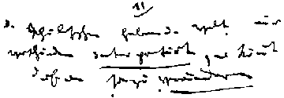

—— 1845 ——
“Both for the production on a mass scale of this communist consciousness, and ... the alteration of men on a mass scale is, necessary, ... a revolution; this revolution is necessary, therefore, not only because the ruling class cannot be overthrown in any other way, but also because the class overthrowing it can only in a revolution succeed in ridding itself of all the muck of ages and become fitted to found society anew.” [German Ideology]
Major Works
Condition of Working Class In England, Engels
The Holy Family, Marx & Engels
THESES ON FEUERBACH, Marx
GERMAN IDEOLOGY, Marx & Engels

“The philosophers have only interpreted the world, in various ways; the point is to change it.”
[Theses On Feuerbach, 11]
Minor Works
Notes on Ricardo, Marx, 1845
Speeches in Elberfeld, Engels
History of the English Corn Laws, Engels
Fourier on Trade, Engels
Peuchet: On Suicide, Marx
Reply to Bruno Bauer's Anti-Critique, Marx and Engels
Festival of Nations in London, Engels
 |
The Late Butchery at Leipzig.-The German Working Men's Movement
Victoria's Visit
"Young Germany" In Switzerland
Persecution and Expulsion of Communists
“A few days in my old man's factory have sufficed to bring me face to face with this beastliness, which I had rather overlooked. ..., it is impossible to carry on communist propaganda on a large scale and at the same time engage in huckstering and industry.” [Engels to Marx. January 20]
Correspondence
Drafts and Fragments
Feuerbach, Engels
F. List's Political Economy, Marx
Library of Best Foreign Writers, Marx
From The Notebook, Marx
Preface to Volume 4 of MECW: Works of Marx & Engels, 1844-1845
and Volume 5: Works of Marx & Engels, April 1845-April 1847